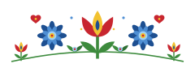

Witaj w Łupawsku!
Mieszkasz nad Jeziorem Jasień, w granicach Parku Krajobrazowego „Dolina Słupi”. Poniżej masz to, co najważniejsze. Resztę znajdziesz w dolnym menu.
Mój plan
Miejsca oznaczone gwiazdką . Zapisują się tylko na tym telefonie.
Odkryj okolicę
Jak znaleźć miejsca na mapie? Otwórz mapę i dotknij dowolnego miejsca, np. miejscowości albo jeziora. Pokażemy listę atrakcji, jedzenia, sklepów i innych ciekawych miejsc w promieniu kilku kilometrów, a na mapie zaznaczymy je małymi kropkami.
Mapa: eKajaki.pl · dane © autorzy OpenStreetMap (ODbL), OpenMapTiles, OpenFreeMap
Ciekawe miejsca w okolicy
Najbliższe imprezy
Wszystkie imprezy i kalendarz roku →
InspiracjePomysły na dzień
Gotowe plany, które łączą miejsca z przewodnika.
W razie wypadku
Na wodzie i w lesie często nie ma adresu. Odczytaj swoją pozycję i podaj ją dyspozytorowi 112.
Informacja turystyczna
Mapy, ulotki, pamiątki i odpowiedzi na pytania na miejscu.
Pozostałe punkty w powiecie bytowskim
Dane z wykazu Starostwa Powiatowego w Bytowie, mogą być nieaktualne. Przed wizytą zadzwoń.
| Parchowo | Gminne Centrum Informacji, ul. Krótka 2, 59 821 48 22 |
| Kołczygłowy | Biuro Promocji UG, ul. Słupska 56, 59 821 32 31 |
| Tuchomie | Centrum Międzynarodowych Spotkań, ul. Szkolna 4, 59 821 56 89 |
| Borzytuchom | GOK, ul. 40-lecia 2, 59 821 13 84 |
| Studzienice | Biuro Promocji UG, ul. Kaszubska 9, 59 821 65 93 |
| Miastko | Punkt IT, ul. Armii Krajowej, 59 857 33 83 |

Łupawsko i okolice
ekajaki.pl · Łupawsko 12A · zdjęcia: Wikimedia Commons, autorzy podpisani na zdjęciach
Co zobaczyć
Lista jest posortowana od najbliższych. Odległości liczone są w linii prostej od Łupawska, a drogą jest zwykle o 20–40% dalej.
Rozrywka i rekreacja
Aquaparki, parki rozrywki, zwierzęta, aktywne atrakcje i kąpieliska w zasięgu jednodniowej wycieczki, posortowane od najbliższych. Ceny i godziny sprawdź na stronie obiektu przed wyjazdem.
Gdzie zjeść
Najbliżej jest Jasień (smażalnia nad jeziorem) i Czarna Dąbrówka. Największy wybór ma Bytów, ok. 15 km drogą. Na wsi wiele lokali działa sezonowo, więc poza wakacjami najpierw zadzwoń.
Uwaga: restauracja „Młyn” w Bytowie (ul. Wolności 15) spłonęła 25.10.2026 i jest nieczynna.
Noclegi w Łupawsku
Wszystkie obiekty leżą nad Jeziorem Jasień, kilka minut pieszo od siebie.
Imprezy i festyny
Najpierw imprezy z ogłoszonym terminem, niżej kalendarz roku: kiedy zwykle odbywa się każda impreza. Terminy letnich imprez gminy zwykle ogłaszają wiosną, dlatego przed wyjazdem sprawdź stronę organizatora.
Najbliższe terminy
Kalendarz roku
Aktualne terminy: kalendarz gminy Czarna Dąbrówka, Bytowskie Centrum Kultury, Kurier Bytowski.
Sklepy i stacje paliw
Gdy pada deszcz
Bytów jest tylko ok. 20 minut autem, a tam są muzea, basen i kawiarnie. Poniżej gotowe plany i lista miejsc pod dachem.
Pod dachem w okolicy
Lekki deszcz? Działaj na zewnątrz
- Spływ kajakowy w mżawce jest zupełnie w porządku: weź pelerynę i suche ubranie w worku. W czasie burzy zawsze zejdź z wody.
- Grzyby po deszczu. Lasy zajmują ponad 60% gminy Czarna Dąbrówka, więc dzień po opadach to najlepszy czas na grzybobranie (sezon: sierpień–październik). Nie wchodź do rezerwatów.
- Przejażdżka szlakiem kościołów szachulcowych: Jasień (1699 r.) i Mikorowo (XVIII w.). Większość podziwiasz z zewnątrz, z parasolem, a między nimi siedzisz w aucie.
Praktyczne
Numery alarmowe
| 112 | numer alarmowy (wszystkie służby) |
| 999 | pogotowie ratunkowe |
| 998 | straż pożarna |
| 997 | policja |
| 601 100 100 | ratownictwo wodne (WOPR) |
Szpital i policja
- Szpital Powiatu Bytowskiego (izba przyjęć całą dobę): Bytów, ul. Lęborska 13, centrala 59 822 85 00. W nagłym wypadku dzwoń na 112.
- Komenda Powiatowa Policji: Bytów, ul. Styp-Rekowskiego 2, 47 74 38 300
- Posterunek Policji: Czarna Dąbrówka, ul. Słupska 5, 47 74 38 441. Nie działa całą dobę, poza godzinami dzwoń do KPP Bytów.
Apteki
Godziny otwarcia sprawdź przed wyjazdem. Dyżury nocne są w Bytowie.
- Czarna Dąbrówka, „Centrum Zdrowia” (najbliżej, ok. 10 km): ul. Lęborska 9, 59 821 23 69
- Bytów, „Rodzinna” (przy szpitalu): ul. Lęborska 11, 59 822 72 02
- Bytów, „Centrum Zdrowia”: ul. Ks. B. Sychty 3, 59 822 66 45
- Bytów, „Pod Aniołem”: ul. Jana Pawła II 5/1, 59 822 43 43
- Bytów, „Helios”: ul. Wojska Polskiego 36E, 59 822 66 68
Dojazd i poruszanie się
- Okolicę najwygodniej zwiedzać autem lub rowerem. Do Bytowa jest ok. 15 km.
- Do Bytowa nie kursują obecnie pociągi pasażerskie. PKP PLK odbudowuje linię Kościerzyna–Lipusz–Bytów, a powrót pociągów zapowiedziano na grudzień 2027 r. Najbliższe stacje to Słupsk i Lębork.
- Dworzec autobusowy w Bytowie: 59 822 22 38 (numer z wykazu gminy, sprawdź aktualność).
- Rowery i trasy GPX znajdziesz na kaszubskierowery.pl.
Zasady w okolicy
- Łupawsko leży w Parku Krajobrazowym „Dolina Słupi” i obok obszaru Natura 2000 „Dolina Łupawy”.
- Do rezerwatu „Gniazda orła bielika” obowiązuje zakaz wstępu (ochrona ścisła). Bieliki najlepiej obserwować z wody, z dystansu.
- Na wyspach Jasienia gnieżdżą się ptaki wodne, m.in. gągoły. Wiosną i na początku lata nie dobijaj do wysp i zachowaj ciszę.
- Pod mostem w cieśninie między Jasieniem Północnym a Południowym jest tylko ok. 1 m prześwitu: żaglówki muszą położyć maszt.